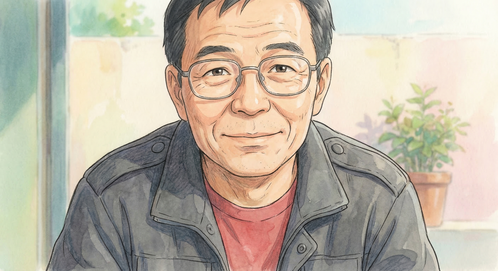
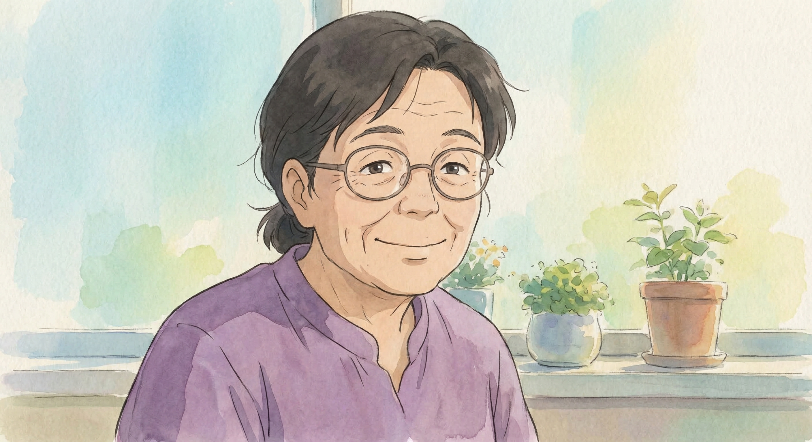
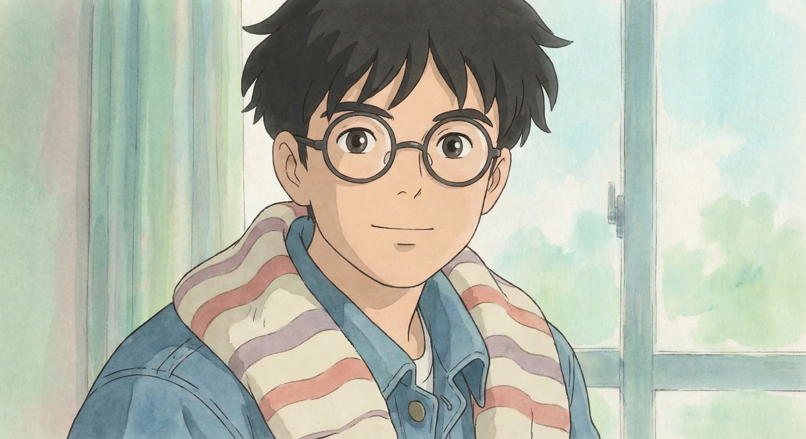
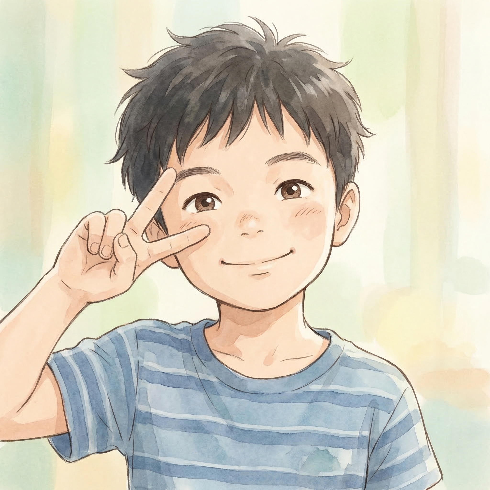
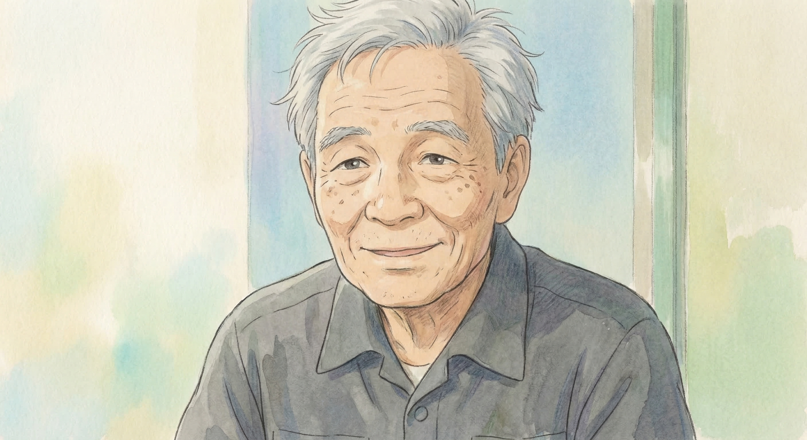
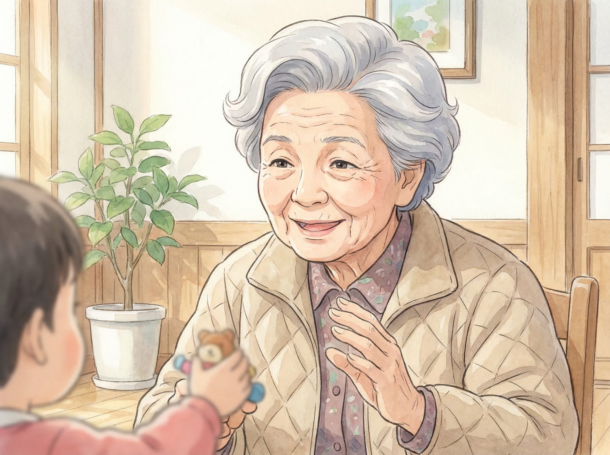

6 個核心角色 · 宮崎駿動畫風格 AI 生成

戴眼鏡、溫暖笑容、灰色外套 + 紅色內搭

戴眼鏡、溫柔笑容、紫色上衣

戴圓框眼鏡、條紋毛衣/牛仔外套

活潑開朗、愛比手勢、紅色/藍色上衣

白髮、慈祥、深灰色上衣

白髮、溫暖笑容、米色外套
🎨 使用 Gemini 3 Pro Image API 生成 · 真正的 AI 創作
生成時間：2026-03-14 06:42 AM
角色標準照，確保後續 AI 生成的一致性！